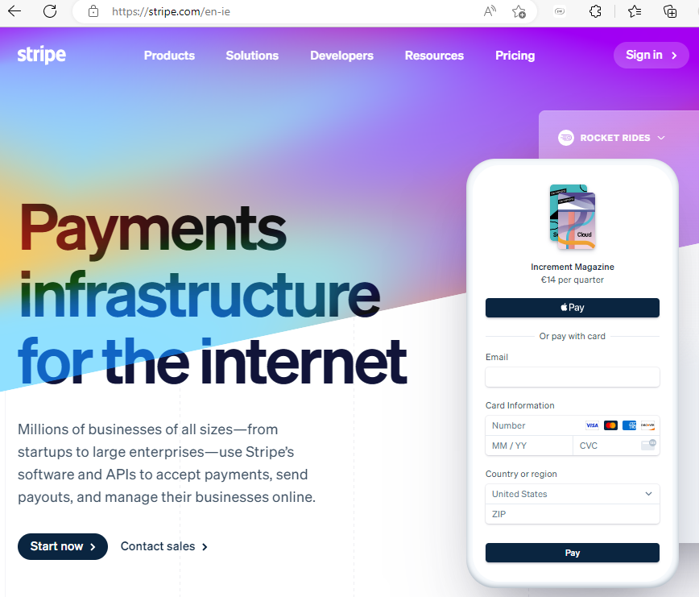
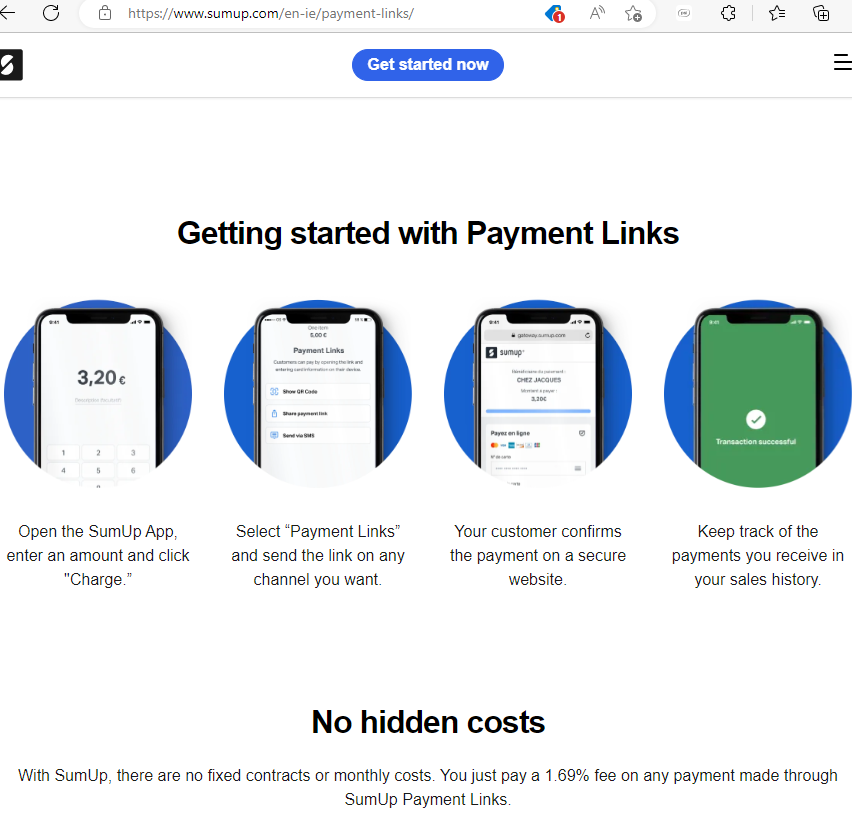

Content Management System (CMS)
A content management system helps companies manage digital content. It organises and facilitates collaborative creation of documents and other content using built-in (or designed) workflows. Different privileges and responsibilities can be provided to individuals based on their roles within the business.
While it can apply to any computer software system CMS is used more specifically to manage websites and web content. Nearly every CMS is comprised of two parts, the front end and the back end, with the front end being the part the user interacts with and the back end being the application that is used to post new content to a website.
The process begins by accessing a web interface to easily add, create and publish content to a business’s front end. So instead of having to know HTML, CSS and JavaScript the content is created in an interface similar to Word which the back end stores in the database and publishes it to the front end of the business’s website. Together these two systems comprise the CMS, allowing a business to publish content without understanding web technologies or creating the website from the beginning. Database technologies with its own programming language as well as another programming language to pass information between the database and the part of the website that user’s access and navigate is complicated.
A CMS can streamline the content creation and distribution process enabling a business get the best value of their content in four key areas: stronger collaboration and organisation, user friendly in ease of use, improve search engine optimisation and drive traffic to the website and allows more time to spend on producing quality content.
There are open source solutions that can provide free CMS which will keep costs down, the best known being Joomla! which does not require technical experience to set-up a website and once established can be easily edited but can be expensive to support and maintain. Bigger businesses will most likely purchase a specially designed system from a provider such as Oracle. (Oracle, 2023)
Customer Relationship Management (CRM)
Customer relationship management is a system for managing a company’s relationships and interactions with current and future customers by improving business relationships thereby growing the business. The system stores customer information, identify sales opportunities, record service issues and manage marketing campaigns, all in one central location and makes this information about every customer available to anyone in the company that needs it. This access to data makes it easier to collaborate and increase productivity. A good CRM gathers information from lots of sources across the business and beyond, getting insights into how customers feel and what they are saying about the business.
Cloud based CRM systems such as Salesforce mean every user has the same information all the time. Data can be updated by any user from anywhere, making it instantly available to other users who need it. Cloud based systems can be quickly and easily implemented as there is no hardware to be set up on multiple devices, no version control and updates to be scheduled, keeping IT costs low. (Salesforce, 2023)
Other CRM system providers are Sage and Microsoft Dynamics365 with HubSpot being the best overall CRM software in 2021: (CRM, 2023)

Payment Systems
All businesses rely on getting paid in full and on time in order to stay in business! This is also the case with E-businesses and today there are numerous online payment options. A study found that websites providing four of more payment methods as well as credit cards have a sales conversion rate of 12% higher than those offering credit cards and just one online option.
Credit cards are still the most widely used method of online payment and a business needs an Internet merchant account in order to set up credit card processing on their website. To get an Internet merchant account a business may need to deal with two separate banks. On checking with the two main banks, Bank of Ireland and AIB, I found that they are in fact offering Third party Internet Merchant Accounts which are quickly set up and can contain ecommerce service packages that include the Internet gateway needed for online credit card processing and a shopping cart.


(AIB Merchant Services, 2023) (Bank of Ireland, 2023)
Third Party Internet Merchant Accounts are a good option also as they do not usually require any security deposits and are quickly set up. Examples are Merchant Accounts, Beanstream, Moneris, PSiGate and InternetSecure. Beanstream have in fact recently evolved to Bambora:
(Bambora, 2023)
Internet Gateway Service is required to verify information, transfers request and authorises credit cards in real time. It is the software that links a business’s shopping cart to the payment processing network.
All-in-one online payment solutions like PayPal, Stripe, Square and Amazon offer a payment solutions that do not require a merchant account. The transaction rates for these vary from 1.9% to 2.9% per transaction and all but Square also charge a transaction fee. PayPal became known through the ecommerce giant eBay and is a favourite payment option for customers and PayPal’s gateway, Payflow is extremely popular with online businesses. Square is cheaper than PayPal and offers attractive free features for small businesses. Stripe offers a business a payment form that is embedded directly into their website so that customers pay while remaining on the business’s website, it also works across multiple devices and even accepts Bitcoin. Amazon had two payment products; Checkout By Amazon (CBA) was an ecommerce solution that allowed businesses to accept Amazon account information and use Amazon for payment processing but it was discontinued in Europe in 2016 and in the US in 2017, Amazon Pay requires an Amazon account and once a customer purchases using their login a business will get their name, email address and post address from Amazon. This information is valuable for marketing the customer directly. This payment method also keeps customers on the Amazon site unlike Stripe.
 (Amazon, 2023)
(Amazon, 2023)
 (Stripe, 2023)
Sumup has become very popular with small retail businesses like coffee shops, hairdressers and even doctors rooms. It also offers a service for remote payments with the use of a Payments Link with a transaction fee of 1.69%. Sumup also provide prom material for business to use to let their customers about paying through Sumup. (Sumup, 2023)

Bitcoin uses peer-to-peer technology to operate with no central authority or banks, managing transactions and issuing bitcoins is carried out by the network. Bitcoin is open-source; its design is public, nobody owns or controls Bitcoin and it can be used to pay for goods and services. Bitcoin has recently lost value on the open market and its volatility may not make it very popular as a payment method. Customers may be nervous when paying by bitcoin as they have to establish that a seller is legitimate, the wallet address is correct and that the service is compatible for refunds purposes.
(Bitcoin, 2023)
Offline Payment Options
Customers who are not comfortable with online options must also be catered for. It is important to give these customers an option to pay over the phone by providing a toll-free number on the website. An order form that customers can fill out and email or even mail will ensure that a business maximises its sales.
Supply Chain Management Systems
Supply chain management is the management of the flow of products, flow of information and the finances flow. Product flow would include raw materials as well as finished goods and any returns or service needs. The information flow covers stock levels, procurement, customer orders and delivery status. The financial flow will have details of credit terms, payment options and schedules and consignment and title ownership of goods. Supply chain management is the coordination and integration of these flows both within and among manufacturers, suppliers, wholesale and retail. Just in Time is the ultimate goal of an effective supply chain management system as if it when everything goes to plan it reduces the amount of inventory a company has to hold. This system has been dealt a number of knocks recently firstly with Covid in 2019, Brexit in 2020, the blockage of the Suez Canal in March 2021 followed by the war in Ukraine in February 2022.
Within a SCM there are planning applications which use algorithms to determine the best way to fill an order and execution applications which track the physical status of goods, the management of materials and the financial information. The planning systems forecast customer demand and adjust the speed and flow of production accordingly. This is further improved by the use of multi-dimensional forecasting which allows users to view information through different filters, by market, time or customer and runs “what if” simulations to project demand. SCM systems also have VMI systems, supplier relationship solutions, procurement software and order fulfilment software which together automate orders, monitor suppliers and payments and decrease lead times to order fulfilment. SCM software not only increases efficiency it reduces costs and provides valuable trend analysis and business intelligence.
SAP and Oracle were among the top providers of supply chain management software in 2021.
(SAP, 2023)